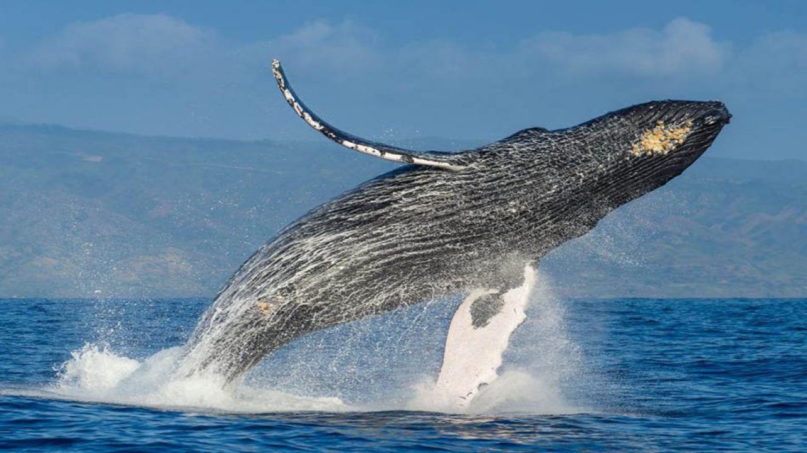
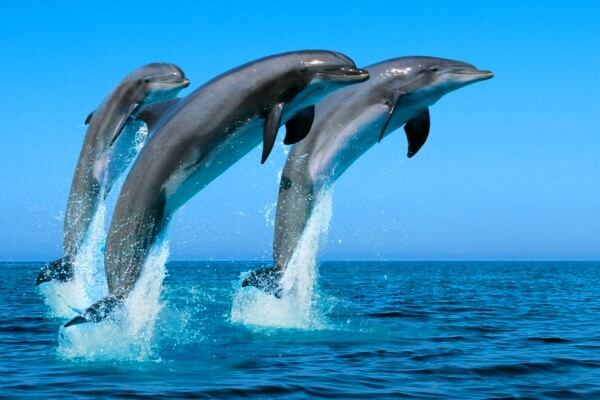

Paquito Navarro comenzó a jugar al pádel a los 5 años. A los 9 años empezó a disputar sus primeros torneos, llamando la atención de todo el mundo que observaba su juego. A los 10 años se convirtió en subcampeón del mundo de su categoría junto a Jaime Bergareche. Con 14 años volvió a jugar otro campeonato del mundo para jugadores de su edad, perdiendo de nuevo en la final.
El siguiente mundial lo disputó en categoría júnior con 16 años, disputando de nuevo la final y cayendo de nuevo en ésta. Tras esto, comenzó a entrenar con Adrián Allemandi hasta los 20 años y consiguió romper su maleficio con las finales tras la consecución del Mundial Junior, el cual sería el último de Paquito.
En 2009 entró en circuito profesional Padel Pro Tour junto a Jordi Muñoz y ese mismo año se proclamó campeón de España sub-23. En 2010 empezó el circuito junto a Pablo Cardozo y terminó junto a Pitu Losada. En 2012 se consagró en circuito profesional junto a Adrián Allemandi donde llegó a dos finales y jugó el Máster Final. En 2013, vuelve a jugar con Jordi Muñoz y en 2014 vuelve a jugar con Adrián Allemandi y también jugó con Maxi Grabiel, con quien ganó el Master de Valencia al ganar en la final a la pareja n.º 1, la formada por Fernando Belasteguín y Juan Martín Díaz.
En 2015, Matías Díaz se convierte en su nueva pareja, llegando a ser ambos la segunda pareja del circuito y realizando una gran temporada. Sin embargo, en la temporada 2016, Paquito, decide cambiar de compañero y comienza dicha temporada junto a Sanyo Gutiérrez con el que llegó a las semifinales del primer torneo de la temporada.
Bullpadel, es la marca de pádel líder en España. Bullpadel nace en 1995 cuando las inquietudes de varios argentinos y españoles dan lugar a la puesta en marcha de un proyecto ambicioso.
Allianz, es una de las compañías líderes del sector asegurador español. Cuenta con una de las gamas de productos más completa e innovadora del mercado y se basa en el concepto de seguridad integral.
Club Deportivo Somontes, es diferente, es un lugar donde el ocio y el deporte se unen para formar uno de los Clubes más importantes de Madrid. Cuenta con figuras internacionales del deporte que lideran las diferentes escuelas deportivas.
Agrométodos es una empresa, que centra sus esfuerzos en la investigación, formulación, desarrollo y comercialización de productos naturales con el objetivo de promover la sanidad de los cultivos y mejorar la eficiencia de los programas nutricionales aumentando la calidad y producción de las cosechas. Su misión es acercar la investigación al agricultor con la visión de ser un referente mundial en nutrición vegetal y protección de cultivos lejos de la lucha química.
Partidos jugados: 486
Partidos ganados: 366
Partidos perdidos: 120
Efectividad: 75,31
Victorias consecutivas: 15
Lugar de nacimiento: Sevilla
Fecha de nacimiento: 10/02/1989
Altura: 1,81
Residencia: Madrid
|
|
 |
|
 |
|